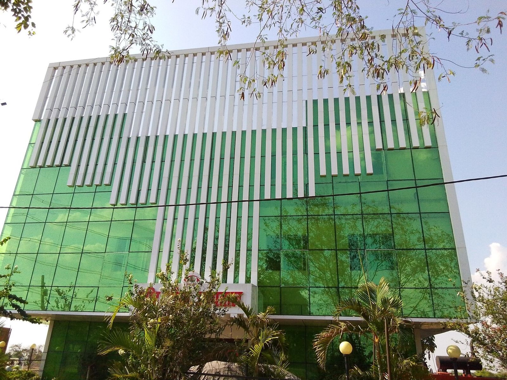
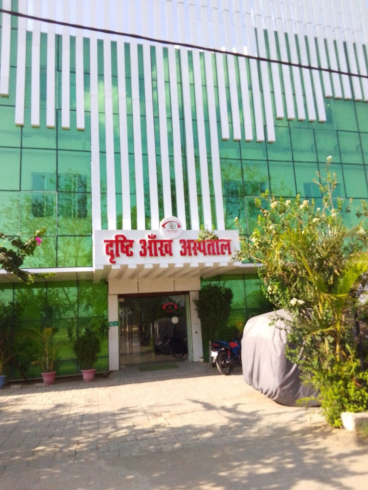
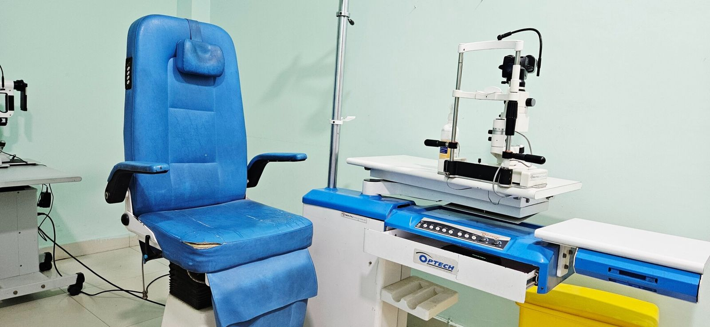

MA
Dr. Md Mojahid Anwar
MBBS, MS (Eye)
Eye surgeon

A unit of Dr. A.P.J. Abdul Kalam Charitable Trust
हर आँख को रोशनी — आपके अपने औरंगाबाद में
Specialist eye care for Aurangabad and the surrounding districts of Bihar and Jharkhand. From routine check-ups to cataract, glaucoma and retina surgery, with free treatment for patients who cannot afford it.
Since 2017, our surgeons, optometrists and outreach teams have carried sight-saving care from the villages of Aurangabad district to our own operating theatre.
More about us
About us
Drishti Eye Care Hospital was founded in 2017 by a group of dedicated local people, including skilled and experienced doctors, under the Dr. A.P.J. Abdul Kalam Charitable Trust. Our aim was simple: build a specialist eye hospital in Aurangabad that anyone can walk into, whatever their ability to pay.
Today we carry out more than 14,000 eye surgeries a year. Patients come to us from Aurangabad, Obra, Deo, Nabinagar, Barun, Dehri, Hariharganj, Nawada, Buxar, Barachatti and Haidar Nagar in Jharkhand.
Know your symptoms
आपकी आँखों में क्या परेशानी है? Pick a symptom to see which kind of care usually helps.
This may be related to
Cloudy, dim or blurred vision, glare at night, or needing brighter light to read are common signs of cataract, especially after 50. Sometimes it is only a change in glasses power.
This is general information, not a diagnosis. Only an eye doctor can tell what is wrong after examining your eyes.
Our specialities
Diagnosis, medical treatment and surgery, from your first eye test to follow-up after an operation.
A cataract is a clouding of the eye's natural lens, and the most common cause of treatable blindness. Surgery replaces the cloudy lens with a clear artificial lens (IOL). It is one of the safest and most successful operations in medicine.
Signs to watch for
What we offer
Glaucoma damages the optic nerve, often because of high pressure inside the eye. It usually has no early symptoms, and sight lost to glaucoma cannot be brought back, so regular check-ups after 40 are important.
Signs to watch for
What we offer
The retina is the light-sensing layer at the back of the eye. Diabetes, high blood pressure and ageing can damage it. Early detection and treatment can prevent serious loss of vision.
Signs to watch for
What we offer
Children's eyes need special care. Squint (crossed eyes) and lazy eye are best treated early, while a child's vision is still developing. We also treat squint in adults.
Signs to watch for
What we offer
Oculoplasty deals with the eyelids, tear ducts and the area around the eye. Treatment improves both comfort and appearance.
Signs to watch for
What we offer
The cornea is the clear front window of the eye. Infections and injuries can cause ulcers that need urgent treatment. Uveitis is inflammation inside the eye.
Signs to watch for
What we offer
An accurate eye test and the right glasses make daily life easier. Our in-house optical shop and contact lens clinic save you a separate trip.
Signs to watch for
What we offer
Not sure what is wrong? Start with a complete eye check-up. Our doctors examine every part of the eye and guide you to the right treatment.
Signs to watch for
What we offer
Eye camps in villages and blocks across the district.
Patients are brought to the hospital and taken back home.
Cataract surgery with lens implant by our surgeons.
Medicines, protective glasses and follow-up check-ups.
Ayushman Bharat · PM-JAY
We are an empanelled hospital under Pradhan Mantri Jan Arogya Yojana. Eligible families get cover of up to ₹5 lakh per year for surgeries such as cataract, corneal grafting, DCR and retinal laser. Bring your Ayushman card and Aadhaar card to the help desk.
Ayushman cards issued in other states may have different rules. Please call us before your visit to check.

Facilities & diagnostics
Patient guide
Coming to Drishti for the first time? Here is what to expect.
Register at the help desk. Show your Ayushman card here if you have one.
An optometrist checks your vision and eye power.
The eye doctor examines your eyes and explains the findings.
Retina, visual field or other tests, done in the same building.
Medicines, glasses or surgery, with clear follow-up dates.
Having these ready makes your visit faster.
Our team
Experienced eye surgeons supported by trained optometrists, nurses and outreach staff.
MBBS, MS (Eye)
Eye surgeon
Eye specialist
Eye specialist
Eye specialist
Recognition
Awarded by the Civil Surgeon and DPM, Aurangabad
Awarded by the District Magistrate, Aurangabad
National Anti-Corruption and Human Rights body
आँखों की जाँच में देर न करें। Most eye problems are easier to treat when they are found early.
Gallery
Patient reviews
Rated 4.4 out of 5 by 138 people on Justdial and 4.6 on Google. Below are short summaries of public reviews.
Good doctor and very supportive staff. I highly recommend this hospital.
One of the biggest eye hospitals in Aurangabad, and they serve poor and needy people for free.
यहाँ आँखों का इलाज बहुत अच्छे से होता है।
FAQs
Can't find your answer? Call us on 081058 52877 or message us on WhatsApp.
Booking ahead by phone or WhatsApp is the best way. We will tell you the OPD timings and which doctor is available, so you wait less.
Yes. We are empanelled under PM-JAY, so eligible patients can get cashless treatment for covered procedures such as cataract surgery. Bring your Ayushman card and Aadhaar card. Cards from other states may have different rules, so please call us first.
Free cataract surgery and aftercare are offered to poor and needy patients, many of whom are identified at our village eye camps. Call us to find out about eligibility and upcoming camps near you.
The operation itself usually takes less than half an hour. Most patients go home the same day or the next day, after the doctor's check. Your doctor will explain the exact plan and the follow-up visits.
Yes, if possible. If your pupils are dilated with eye drops, your vision may stay blurry for a few hours and you should not drive. For surgery, an attendant is needed.
Yes. We examine children of all ages and treat squint, lazy eye, childhood cataract and the need for glasses.
On MG Road (Daltonganj Road) at Bhairopur, near Chatra More, Aurangabad, Bihar 824102. Look for the green glass building with the sign दृष्टि आँख अस्पताल.
Visit us
Fill in your details and send them to us on WhatsApp. Our team will confirm your visit.
Need help?
Choose how you'd like to reach us · हमसे संपर्क करें
We're here to help 👁️